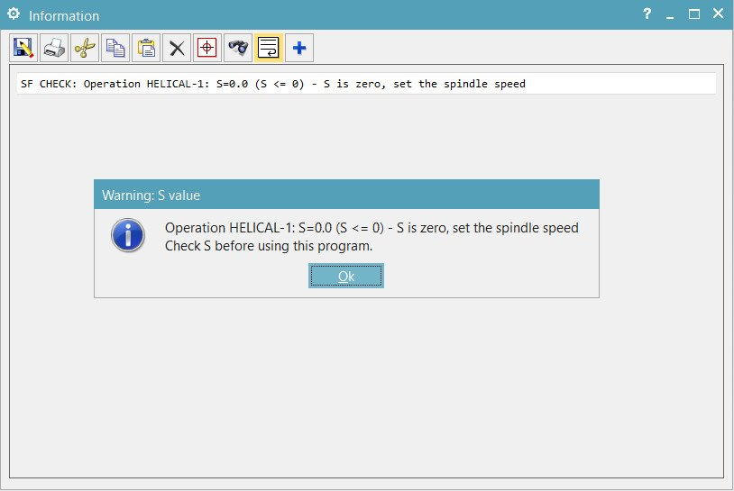

1. Đầu chương trình đủ thông tin cho thợ đứng máy
Nhìn đầu file là biết chương trình sâu nhất bao nhiêu, chạy bao lâu, cần lắp những dao nào và mỗi dao ăn sâu tới đâu.
(Z min: -20.000) ← điểm sâu nhất cả chương trình
(Time: 5 min) ← thời gian gia công
(T7 /H7 /D6.0 /R0.0/Z-2.00/C6) ← danh sách dao: số, bù dài,
(T16/H16/D7.0 /R0.0/Z-10.00/K7) đường kính, bán kính góc,
(T18/H18/D8.0 /R0.0/Z-12.00/TAP) Z sâu nhất của từng dao, tên dao
(T6 /H6 /D6.0 /R0.0/Z-20.00/D6)
(T15/H15/D5.2 /R0.0/Z-10.00/K5.2)
(T4 /H4 /D4.0 /R0.0/Z-10.00/D4)
(14:33 - 30/10/2026) ← ngày giờ xuất
(test.prt) ← tên file part
G17G40G80G49G94G21
G91G28Z0
G0G90G54X0Y02. Trước mỗi dao: thông tin dao, S/F, dao chờ
(T7/ H7/ D6.00/ R0.0/ C6/ Z-2.00)
(S: 8000.0/ F: 300.0)
N1T7M6
T16 ← dao chờ: ổ dao chuẩn bị sẵn dao kế tiếp
G0G90G54X0Y0
G43H7Z50.M8
S8000M3
G81Z-2.R1.F300.
X50.
G80
G0Z50.
M9
M5
G91G28Z0
M1Có hướng dẫn tự làm: dao chờ, G54 và X0Y0, bỏ M1 dao đầu, khoan bỏ R lặp.
3. Taro cứng M29 / G95 có Q bẻ phoi
Chuyển sang chạy dao theo vòng (G95), F chính là bước ren, bật taro cứng M29, xong trả lại G94. Chưa có bài hướng dẫn vì cần nhiều thiết lập trong post.
N1T18M6
G0G90G54X0Y0
G43H18Z50.M8
G95
M29S100
G84Z-12.R2.F1.25Q2.
X50.
G80
G94
G0Z50.4. Kiểm tra S và F trước khi ra file
Post hiện cảnh báo ngay khi một nguyên công có tốc độ trục chính bằng 0, kèm tên nguyên công, thay vì xuất S0M3.

Bản đơn giản để tự làm: cảnh báo S = 0 / F chưa chỉnh.
5. Xuất xong tự mở CIMCO
Tự tìm CIMCO ở mọi thư mục cài, không có thì mở Notepad++. Xem bài và video.
Cần post như thế cho máy của bạn?
Gửi tên máy, bộ điều khiển, phiên bản NX và một đoạn chương trình mẫu đang chạy trên máy. ThanhCAM chỉnh post theo đúng máy và kiểm tra bằng file NC xuất thật trước khi giao.